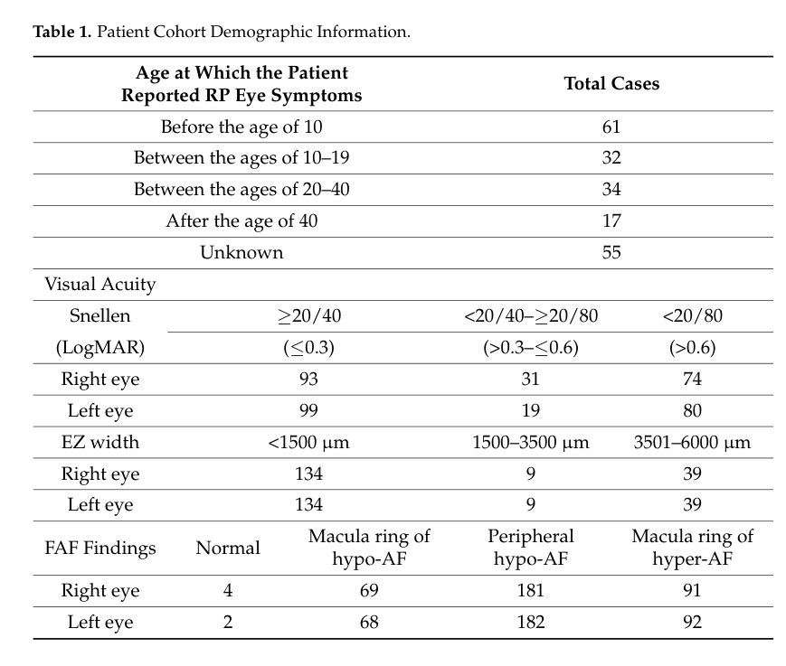

Inherited retinal dystrophies (IRDs) are a large, clinically and genetically heterogeneous group of degenerative diseases of the retina caused by pathogenic variants in any of more than 280 genes. As a Mendelian grouping term, IRD encompasses progressive degeneration of photoreceptors and/or the retinal pigment epithelium (RPE), leading to visual impairment that ranges from congenital blindness to slowly progressive night blindness and central vision loss. The unifying pathophysiology is dysfunction of one of a small number of shared retinal processes - phototransduction, the retinoid (visual) cycle, photoreceptor outer-segment structure and ciliary transport, RPE metabolism and phagocytosis, RNA splicing, or cellular homeostasis - culminating in photoreceptor cell death. Major clinical subtypes include retinitis pigmentosa (rod-predominant), Leber congenital amaurosis (severe congenital onset), cone-rod dystrophy (cone-predominant), and choroideremia (X-linked chorioretinal degeneration). IRDs collectively are a leading cause of inherited blindness in working-age adults.
Ask a research question about Inherited Retinal Dystrophy. OpenScientist will conduct autonomous deep research using the Disorder Mechanisms Knowledge Base and PubMed literature (typically 10-30 minutes).
Do not include personal health information in your question. Questions and results are cached in your browser's local storage.
name: Inherited Retinal Dystrophy
creation_date: "2026-06-08T00:00:00Z"
category: Mendelian
description: >-
Inherited retinal dystrophies (IRDs) are a large, clinically and genetically
heterogeneous group of degenerative diseases of the retina caused by
pathogenic variants in any of more than 280 genes. As a Mendelian grouping
term, IRD encompasses progressive degeneration of photoreceptors and/or the
retinal pigment epithelium (RPE), leading to visual impairment that ranges
from congenital blindness to slowly progressive night blindness and central
vision loss. The unifying pathophysiology is dysfunction of one of a small
number of shared retinal processes - phototransduction, the retinoid
(visual) cycle, photoreceptor outer-segment structure and ciliary transport,
RPE metabolism and phagocytosis, RNA splicing, or cellular homeostasis -
culminating in photoreceptor cell death. Major clinical subtypes include
retinitis pigmentosa (rod-predominant), Leber congenital amaurosis
(severe congenital onset), cone-rod dystrophy (cone-predominant), and
choroideremia (X-linked chorioretinal degeneration). IRDs collectively are a
leading cause of inherited blindness in working-age adults.
disease_term:
preferred_term: inherited retinal dystrophy
term:
id: MONDO:0019118
label: inherited retinal dystrophy
synonyms:
- hereditary retinal dystrophy
- inherited retinal disease
- retinal dystrophy
- hereditary retinal degeneration
references:
- reference: PMID:30285347
title: "Nonsyndromic Leber Congenital Amaurosis / Early-Onset Severe Retinal Dystrophy Overview."
tags:
- GeneReviews
- reference: PMID:31725251
title: "Autosomal Recessive RPE65-Related Retinal Degeneration."
tags:
- GeneReviews
- reference: PMID:20301511
title: "Choroideremia."
tags:
- GeneReviews
parents:
- Ophthalmological Disease
- Retinal Degeneration
inheritance:
- name: Autosomal recessive inheritance
inheritance_term:
preferred_term: Autosomal recessive inheritance
term:
id: HP:0000007
label: Autosomal recessive inheritance
- name: Autosomal dominant inheritance
inheritance_term:
preferred_term: Autosomal dominant inheritance
term:
id: HP:0000006
label: Autosomal dominant inheritance
- name: X-linked inheritance
inheritance_term:
preferred_term: X-linked inheritance
term:
id: HP:0001417
label: X-linked inheritance
epidemiology:
- name: Leading cause of inherited blindness
description: >-
Inherited retinal diseases are collectively a leading cause of blindness,
particularly in working-age adults, and their genetic heterogeneity is the
principal barrier to therapy development.
evidence:
- reference: PMID:40301324
reference_title: "Autophagy disruption and mitochondrial stress precede photoreceptor necroptosis in multiple mouse models of inherited retinal disorders."
supports: SUPPORT
evidence_source: MODEL_ORGANISM
snippet: "Inherited retinal diseases (IRDs) are a leading cause of blindness worldwide."
explanation: >-
Confirms IRDs collectively as a leading worldwide cause of blindness.
- name: Childhood-to-adolescence onset and marked heterogeneity
description: >-
Non-syndromic IRDs such as retinitis pigmentosa and Leber congenital
amaurosis typically present between early childhood and late adolescence and
are highly genetically and phenotypically heterogeneous.
evidence:
- reference: PMID:37525225
reference_title: "A multidisciplinary approach to inherited retinal dystrophies from diagnosis to initial care: a narrative review with inputs from clinical practice."
supports: SUPPORT
evidence_source: HUMAN_CLINICAL
snippet: "Non-syndromic inherited retinal dystrophies (IRDs) such as retinitis pigmentosa or Leber congenital amaurosis generally manifest between early childhood and late adolescence"
explanation: >-
Documents the typical childhood-to-adolescence onset window across the
major non-syndromic IRD subtypes.
prevalence:
- population: Global, all inherited retinal dystrophies combined
percentage: 1 in 2,000 to 1 in 4,000
notes: >-
Collectively, inherited retinal dystrophies are estimated to affect
approximately 1 in 2,000 to 1 in 4,000 people worldwide. Retinitis
pigmentosa, the most common subtype, accounts for a large share of this
burden.
evidence:
- reference: PMID:38317096
supports: SUPPORT
evidence_source: HUMAN_CLINICAL
snippet: "Inherited retinal degenerations (IRDs) are a group of rare genetic conditions affecting retina of the eye that range in prevalence from 1 in 2000 to 1 in 4000 people globally."
explanation: >-
A systematic review provides the consolidated global prevalence range of
1 in 2,000 to 1 in 4,000 for inherited retinal dystrophies.
has_subtypes:
- name: RP
display_name: Retinitis Pigmentosa
subtype_term:
preferred_term: retinitis pigmentosa
term:
id: MONDO:0019200
label: retinitis pigmentosa
description: >-
The most common IRD; a rod-cone dystrophy beginning with rod photoreceptor
degeneration producing night blindness and progressive peripheral
(mid-peripheral) visual field constriction, followed by cone involvement and
eventual central vision loss. Hallmark fundus findings are bone-spicule
pigmentation, attenuated retinal vessels, and waxy disc pallor. Inherited as
autosomal recessive, autosomal dominant, or X-linked, and caused by variants
in dozens of genes (e.g., RHO, USH2A, RPGR).
evidence:
- reference: PMID:17113430
reference_title: "Retinitis pigmentosa."
supports: SUPPORT
evidence_source: HUMAN_CLINICAL
snippet: "patients typically lose night vision in adolescence, side vision in young adulthood, and central vision in later life because of progressive loss of rod and cone photoreceptor cells"
explanation: >-
Defines retinitis pigmentosa as a rod-cone dystrophy with the characteristic
sequence of night blindness, peripheral then central vision loss from
photoreceptor degeneration.
- name: LCA
display_name: Leber Congenital Amaurosis
subtype_term:
preferred_term: Leber congenital amaurosis
term:
id: MONDO:0018998
label: Leber congenital amaurosis
description: >-
The most severe and earliest-onset IRD, presenting in the first year of life
with profound visual impairment, nystagmus, sluggish pupillary responses, and
a severely reduced or non-recordable electroretinogram. Caused by biallelic
variants in genes including RPE65, CEP290, GUCY2D, and CRB1. RPE65-associated
LCA is treatable with voretigene neparvovec gene therapy.
evidence:
- reference: PMID:31725251
reference_title: "Autosomal Recessive RPE65-Related Retinal Degeneration."
supports: SUPPORT
evidence_source: HUMAN_CLINICAL
snippet: "In RPE65-related LCA, onset of visual manifestations frequently occurs in infancy during the first year of life."
explanation: >-
GeneReviews documents the congenital/infantile onset that defines Leber
congenital amaurosis as the most severe, earliest-onset IRD.
- name: Cone-Rod Dystrophy
display_name: Cone-Rod Dystrophy
subtype_term:
preferred_term: cone-rod dystrophy
term:
id: MONDO:0015993
label: cone-rod dystrophy
description: >-
A cone-predominant IRD in which cone degeneration precedes or exceeds rod
loss, producing early central vision loss, reduced visual acuity,
photophobia, dyschromatopsia, and central scotomas, with later peripheral
field involvement. Caused by variants in genes such as ABCA4, CRX, and GUCY2D.
- name: Choroideremia
display_name: Choroideremia
subtype_term:
preferred_term: choroideremia
term:
id: MONDO:0010557
label: choroideremia
description: >-
An X-linked chorioretinal dystrophy caused by loss-of-function variants in
CHM, encoding Rab escort protein 1 (REP-1). Affected males develop progressive
degeneration of the photoreceptors, RPE, and choriocapillaris, with night
blindness in childhood, progressive peripheral field loss, and eventual
central vision loss.
evidence:
- reference: PMID:20301511
reference_title: "Choroideremia."
supports: SUPPORT
evidence_source: HUMAN_CLINICAL
snippet: "Choroideremia (CHM) is characterized by progressive chorioretinal degeneration in affected males and milder signs in heterozygous (carrier) females."
explanation: >-
GeneReviews confirms choroideremia as an X-linked progressive chorioretinal
degeneration affecting males, with carrier females mildly affected.
- reference: PMID:20301511
reference_title: "Choroideremia."
supports: SUPPORT
evidence_source: HUMAN_CLINICAL
snippet: "symptoms in affected males evolve from night blindness to peripheral visual field loss, with central vision preserved until late in life"
explanation: >-
Documents the clinical course of choroideremia from night blindness through
peripheral field loss to late central vision loss.
pathophysiology:
- name: Photoreceptor Outer Segment and Ciliary Dysfunction
description: >-
Many IRD genes encode proteins required for the structure and renewal of the
photoreceptor outer segment and for protein/lipid transport through the
connecting cilium. Defects in outer-segment morphogenesis, disc renewal, or
intraflagellar/ciliary transport (e.g., RPGR, CEP290, USH2A) impair
phototransduction protein trafficking and outer-segment maintenance, leading
to photoreceptor stress and degeneration.
cell_types:
- preferred_term: rod photoreceptor
term:
id: CL:0000604
label: retinal rod cell
- preferred_term: cone photoreceptor
term:
id: CL:0000573
label: retinal cone cell
biological_processes:
- preferred_term: photoreceptor cell outer segment organization
term:
id: GO:0035845
label: photoreceptor cell outer segment organization
downstream:
- target: Photoreceptor Cell Death
- name: Visual Cycle and Phototransduction Disruption
description: >-
A second major class of IRD genes encodes components of the retinoid
(visual) cycle and the phototransduction cascade. Defects in RPE65, LRAT,
RDH genes, RPE-photoreceptor retinoid recycling, or in phototransduction
proteins (RHO, GUCY2D, PDE6, CNGA1) impair regeneration of 11-cis-retinal
or the conversion of light into a neural signal, causing photoreceptor
dysfunction and, when chronic, degeneration.
cell_types:
- preferred_term: retinal pigment epithelial cell
term:
id: CL:0002586
label: retinal pigment epithelial cell
- preferred_term: rod photoreceptor
term:
id: CL:0000604
label: retinal rod cell
biological_processes:
- preferred_term: visual perception / phototransduction
term:
id: GO:0007601
label: visual perception
- preferred_term: retinoid metabolic process
term:
id: GO:0001523
label: retinoid metabolic process
evidence:
- reference: PMID:36830640
reference_title: "Cellular and Molecular Mechanisms of Pathogenesis Underlying Inherited Retinal Dystrophies."
supports: SUPPORT
evidence_source: OTHER
snippet: "have downstream effects in pathways critical to vision, including phototransduction, the visual cycle, photoreceptor development, cellular respiration, and retinal homeostasis"
explanation: >-
This mechanistic review identifies phototransduction and the visual cycle
among the core pathways disrupted by IRD gene mutations, supporting this
node as a shared upstream mechanism.
downstream:
- target: Photoreceptor Cell Death
- name: RPE Dysfunction and Toxic Metabolite Accumulation
description: >-
The RPE supports photoreceptors via the visual cycle, daily phagocytosis of
shed outer-segment discs, and metabolic and barrier functions. In IRDs such
as ABCA4-related disease (Stargardt) and choroideremia, defective clearance
of retinoid by-products leads to accumulation of toxic bisretinoids
(lipofuscin/A2E) in the RPE, RPE cell death, and secondary photoreceptor
and choriocapillaris degeneration.
cell_types:
- preferred_term: retinal pigment epithelial cell
term:
id: CL:0002586
label: retinal pigment epithelial cell
cellular_components:
- preferred_term: photoreceptor outer segment
term:
id: GO:0001750
label: photoreceptor outer segment
biological_processes:
- preferred_term: phagocytosis of shed photoreceptor outer segment discs
term:
id: GO:0006909
label: phagocytosis
modifier: DECREASED
evidence:
- reference: PMID:36830640
reference_title: "Cellular and Molecular Mechanisms of Pathogenesis Underlying Inherited Retinal Dystrophies."
supports: SUPPORT
evidence_source: OTHER
snippet: "These diseases are most often the result of defects in rod and/or cone photoreceptor and retinal pigment epithelium function, development, or both."
explanation: >-
This mechanistic review establishes retinal pigment epithelium dysfunction
as one of the core defects underlying inherited retinal dystrophies,
supporting this RPE node as a shared upstream mechanism.
downstream:
- target: Photoreceptor Cell Death
- name: Photoreceptor Cell Death
description: >-
The convergent endpoint of all IRD mechanisms is progressive, irreversible
apoptotic (and non-apoptotic) death of rod and/or cone photoreceptors,
producing the corresponding visual phenotype. Rod loss tends to occur first
in rod-cone dystrophies (night blindness, peripheral field loss), while cone
loss dominates in cone-rod dystrophies (central acuity and color vision loss).
evidence:
- reference: PMID:17113430
reference_title: "Retinitis pigmentosa."
supports: SUPPORT
evidence_source: HUMAN_CLINICAL
snippet: "progressive loss of rod and cone photoreceptor cells"
explanation: >-
Establishes progressive photoreceptor cell death as the convergent
mechanism producing vision loss across IRDs.
- reference: PMID:40301324
reference_title: "Autophagy disruption and mitochondrial stress precede photoreceptor necroptosis in multiple mouse models of inherited retinal disorders."
supports: SUPPORT
evidence_source: MODEL_ORGANISM
snippet: "in genetically and functionally distinct IRD models, common early defects in autophagy and mitochondrial damage exist, triggering photoreceptor cell death by necroptosis in later disease stages"
explanation: >-
Single-cell transcriptomic study of humanised IRD mouse models shows
autophagy/mitochondrial stress and necroptosis as a convergent, gene-agnostic
photoreceptor-death pathway, supporting photoreceptor cell death as the
shared endpoint across IRDs.
cell_types:
- preferred_term: photoreceptor cell
term:
id: CL:0000210
label: photoreceptor cell
biological_processes:
- preferred_term: retinal cell programmed cell death
term:
id: GO:0046666
label: retinal cell programmed cell death
modifier: INCREASED
phenotypes:
- category: Clinical
name: Night Blindness
description: >-
Impaired vision in dim light (nyctalopia), typically the earliest symptom of
rod-predominant IRDs such as retinitis pigmentosa and choroideremia.
phenotype_term:
preferred_term: Nyctalopia
term:
id: HP:0000662
label: Nyctalopia
evidence:
- reference: PMID:17113430
reference_title: "Retinitis pigmentosa."
supports: SUPPORT
evidence_source: HUMAN_CLINICAL
snippet: "patients typically lose night vision in adolescence"
explanation: >-
Night blindness (nyctalopia) is the characteristic earliest symptom of
rod-predominant inherited retinal dystrophy.
- category: Clinical
name: Progressive Visual Field Constriction
description: >-
Progressive loss of peripheral visual field ("tunnel vision") from
mid-peripheral rod degeneration, characteristic of retinitis pigmentosa.
phenotype_term:
preferred_term: Constriction of peripheral visual field
term:
id: HP:0001133
label: Constriction of peripheral visual field
clinical_course: PROGRESSIVE
evidence:
- reference: PMID:17113430
reference_title: "Retinitis pigmentosa."
supports: SUPPORT
evidence_source: HUMAN_CLINICAL
snippet: "side vision in young adulthood"
explanation: >-
Progressive loss of peripheral ("side") vision is a hallmark of retinitis
pigmentosa, following the initial night blindness.
- category: Clinical
name: Reduced Visual Acuity
description: >-
Loss of central visual acuity, occurring early in cone-rod dystrophy and
Leber congenital amaurosis and later in rod-cone dystrophy.
phenotype_term:
preferred_term: Reduced visual acuity
term:
id: HP:0007663
label: Reduced visual acuity
evidence:
- reference: PMID:31725251
reference_title: "Autosomal Recessive RPE65-Related Retinal Degeneration."
supports: SUPPORT
evidence_source: HUMAN_CLINICAL
snippet: "presenting with nyctalopia (i.e., inability or reduced ability to see in dim light or at night) and reduced visual acuity"
explanation: >-
GeneReviews documents reduced visual acuity as a presenting feature of
RPE65-related early-onset severe retinal dystrophy.
- category: Clinical
name: Color Vision Impairment
description: >-
Impaired color discrimination (dyschromatopsia), a prominent feature of
cone-predominant and mixed IRDs and a frequent presenting symptom in
retinitis pigmentosa cohorts.
phenotype_term:
preferred_term: Color vision impairment
term:
id: HP:0000551
label: Color vision defect
frequency: FREQUENT
evidence:
- reference: PMID:37446072
reference_title: "Clinical Characteristics and Genetic Variants of a Large Cohort of Patients with Retinitis Pigmentosa Using Multimodal Imaging and Next Generation Sequencing."
supports: SUPPORT
evidence_source: HUMAN_CLINICAL
snippet: "Presenting symptoms included nyctalopia (85.4%) photosensitivity/hemeralopia (60.5%), and decreased color vision (55.8%)."
explanation: >-
In a cohort of 199 retinitis pigmentosa patients, decreased color vision
was a presenting symptom in 55.8%, supporting color vision impairment as a
frequent IRD phenotype.
- category: Clinical
name: Photophobia
description: >-
Light sensitivity, common in cone-predominant dystrophies.
phenotype_term:
preferred_term: Photophobia
term:
id: HP:0000613
label: Photophobia
evidence:
- reference: PMID:37446072
reference_title: "Clinical Characteristics and Genetic Variants of a Large Cohort of Patients with Retinitis Pigmentosa Using Multimodal Imaging and Next Generation Sequencing."
supports: SUPPORT
evidence_source: HUMAN_CLINICAL
snippet: "Presenting symptoms included nyctalopia (85.4%) photosensitivity/hemeralopia (60.5%), and decreased color vision (55.8%)."
explanation: >-
Photosensitivity/hemeralopia was a presenting symptom in 60.5% of a
retinitis pigmentosa cohort, supporting photophobia as a common IRD
feature.
- category: Clinical
name: Abnormal Electroretinogram
description: >-
Reduced or non-recordable rod and/or cone responses on electroretinography,
a key diagnostic feature reflecting photoreceptor dysfunction; severely
reduced or extinguished in Leber congenital amaurosis.
phenotype_term:
preferred_term: Abnormal electroretinogram
term:
id: HP:0000512
label: Abnormal electroretinogram
evidence:
- reference: PMID:17113430
reference_title: "Retinitis pigmentosa."
supports: SUPPORT
evidence_source: HUMAN_CLINICAL
snippet: "Measures of retinal function, such as the electroretinogram, show that photoreceptor function is diminished generally many years before"
explanation: >-
The electroretinogram is a key diagnostic measure that detects diminished
photoreceptor function in IRD, often before symptoms arise.
- category: Clinical
name: Retinal Pigment Deposits
description: >-
Bone-spicule intraretinal pigment migration and RPE changes, a hallmark
fundus finding of retinitis pigmentosa.
phenotype_term:
preferred_term: Bone spicule-like pigmentary changes
term:
id: HP:0007737
label: Spicular pigmentation of the retina
- category: Clinical
name: Nystagmus
description: >-
Involuntary rhythmic eye movements, characteristic of early-onset severe
disease such as Leber congenital amaurosis.
phenotype_term:
preferred_term: Nystagmus
term:
id: HP:0000639
label: Nystagmus
genetic:
- name: RPE65
features: >-
RPE65 encodes the retinoid isomerohydrolase of the visual cycle; biallelic
loss-of-function variants cause early-onset severe IRD / Leber congenital
amaurosis, treatable with voretigene neparvovec gene therapy.
gene_term:
preferred_term: RPE65
term:
id: hgnc:10294
label: RPE65
association: Causative
evidence:
- reference: PMID:31725251
reference_title: "Autosomal Recessive RPE65-Related Retinal Degeneration."
supports: SUPPORT
evidence_source: HUMAN_CLINICAL
snippet: "The three phenotypes of autosomal recessive RPE65-related retinal degeneration, from most severe to mildest, are Leber congenital amaurosis (LCA), early-onset severe retinal dystrophy (EOSRD), and juvenile retinitis pigmentosa (RP)."
explanation: >-
Confirms biallelic RPE65 variants cause a spectrum of inherited retinal
degeneration spanning LCA, EOSRD, and juvenile RP.
- name: RHO
features: >-
RHO encodes rhodopsin, the rod visual pigment; variants are a common cause of
autosomal dominant retinitis pigmentosa (and a recessive form).
gene_term:
preferred_term: RHO
term:
id: hgnc:10012
label: RHO
association: Causative
- name: ABCA4
features: >-
ABCA4 encodes the photoreceptor flippase that clears retinoid by-products;
biallelic variants cause Stargardt disease and a spectrum of cone-rod and
rod-cone dystrophies.
gene_term:
preferred_term: ABCA4
term:
id: hgnc:34
label: ABCA4
association: Causative
- name: RPGR
features: >-
RPGR encodes the retinitis pigmentosa GTPase regulator at the connecting
cilium; variants cause the most common form of X-linked retinitis pigmentosa.
gene_term:
preferred_term: RPGR
term:
id: hgnc:10295
label: RPGR
association: Causative
- name: USH2A
features: >-
USH2A encodes usherin; variants cause autosomal recessive retinitis
pigmentosa (non-syndromic) and Usher syndrome type 2 (with hearing loss).
gene_term:
preferred_term: USH2A
term:
id: hgnc:12601
label: USH2A
association: Causative
- name: CHM
features: >-
CHM encodes Rab escort protein 1 (REP-1); loss-of-function variants cause
X-linked choroideremia.
gene_term:
preferred_term: CHM
term:
id: hgnc:1940
label: CHM
association: Causative
treatments:
- name: Voretigene Neparvovec Gene Therapy
therapeutic_modality: GENE_THERAPY
description: >-
Subretinal AAV2-mediated gene-augmentation therapy delivering a functional
RPE65 cDNA, approved for biallelic RPE65-mutation-associated retinal
dystrophy. Improves functional vision and light sensitivity.
treatment_term:
preferred_term: gene therapy
term:
id: MAXO:0001001
label: gene therapy
evidence:
- reference: PMID:28712537
reference_title: "Efficacy and safety of voretigene neparvovec (AAV2-hRPE65v2) in patients with RPE65-mediated inherited retinal dystrophy: a randomised, controlled, open-label, phase 3 trial."
supports: SUPPORT
evidence_source: HUMAN_CLINICAL
snippet: "At 1 year, mean bilateral MLMT change score was 1·8 (SD 1·1) light levels in the intervention group versus 0·2 (1·0) in the control group"
explanation: >-
The pivotal phase 3 randomised controlled trial demonstrated that voretigene
neparvovec improved functional vision (multi-luminance mobility testing) in
RPE65-mediated inherited retinal dystrophy.
- name: Vitamin A Supplementation
description: >-
Historically used dietary intervention proposed to slow electroretinographic
decline in some forms of retinitis pigmentosa; benefit is modest and
contraindicated in ABCA4-related (Stargardt) disease.
treatment_term:
preferred_term: dietary intervention
term:
id: MAXO:0000088
label: dietary intervention
evidence:
- reference: PMID:17113430
reference_title: "Retinitis pigmentosa."
supports: PARTIAL
evidence_source: HUMAN_CLINICAL
snippet: "nutritional interventions, including vitamin A palmitate and omega-3-rich fish, slow progression of disease in many patients"
explanation: >-
Controlled-trial data cited in this Seminar indicate vitamin A palmitate and
omega-3 supplementation modestly slow disease progression in retinitis
pigmentosa; classified PARTIAL because benefit is limited and not applicable
to all IRD subtypes (e.g., ABCA4-related disease).
- name: Low Vision Rehabilitation
description: >-
Supportive care including low-vision aids, orientation and mobility training,
and visual rehabilitation to maximize residual function.
treatment_term:
preferred_term: rehabilitation
term:
id: NCIT:C15315
label: Rehabilitation
- name: Genetic Counseling
description: >-
Genetic counseling and molecular diagnosis are core components of IRD
management, informing prognosis, inheritance-based recurrence risk, family
planning, and eligibility for gene-specific therapies and trials.
treatment_term:
preferred_term: genetic counseling
term:
id: MAXO:0000079
label: genetic counseling
evidence:
- reference: PMID:31725251
reference_title: "Autosomal Recessive RPE65-Related Retinal Degeneration."
supports: SUPPORT
evidence_source: HUMAN_CLINICAL
snippet: "GENETIC COUNSELING: RPE65-related retinal degeneration is inherited in an autosomal recessive manner."
explanation: >-
GeneReviews includes a dedicated genetic counseling section for
RPE65-related retinal degeneration, reflecting genetic counseling as a
core component of inherited retinal dystrophy management.
Inherited retinal dystrophies (IRDs; also commonly termed inherited retinal degenerations/diseases) are a group of rare, typically progressive disorders characterized by dysfunction and eventual loss of photoreceptors (rods and/or cones) and frequently retinal pigment epithelium (RPE) involvement, leading to visual impairment or blindness. IRDs show substantial genetic and phenotypic heterogeneity and overlapping clinical presentations among distinct entities, complicating diagnosis. (murro2023amultidisciplinaryapproach pages 1-2, murro2023amultidisciplinaryapproach pages 2-3)
Abstract-supported quote (definition/impact): Murro et al. describe IRDs as “a group of rare, typically progressive disorders marked by dysfunction and loss of photoreceptors and the retinal pigment epithelium, resulting in marked vision impairment or blindness.” (murro2023amultidisciplinaryapproach pages 1-2)
Common IRD entities include: - Retinitis pigmentosa (RP) (most common generalized IRD) (murro2023amultidisciplinaryapproach pages 2-3) - Leber congenital amaurosis (LCA) (severe early-onset IRD of infancy) (murro2023amultidisciplinaryapproach pages 2-3) - Cone dystrophy / cone–rod dystrophy, Stargardt disease (STGD1), Usher syndrome, Bardet–Biedl syndrome, congenital stationary night blindness (CSNB), and many other ocular-only and syndromic forms (malvasi2023genetherapyin pages 2-3, munir2024asystematicreview pages 2-4)
Common umbrella synonyms: - “Inherited retinal dystrophies” - “Inherited retinal degenerations” - “Inherited retinal diseases” These terms are used across aggregated resources and publications (munir2024asystematicreview pages 1-2, murro2023amultidisciplinaryapproach pages 1-2, marques2024currentmanagementof pages 2-3).
Most information in this report is derived from aggregated disease-level resources (reviews, systematic reviews, cohort studies, trials), not individual EHR-only data. Examples include national surveys (Portugal), systematic review/meta-analyses, genetic-testing cohorts, and prospective trials. (marques2024currentmanagementof pages 3-5, ng2024costofillnessstudiesof pages 1-2)
IRDs are primarily caused by pathogenic germline variants in genes critical to retinal development and function, spanning multiple biological pathways (phototransduction, retinoid cycle, cilia/trafficking, disc morphogenesis, RPE phagocytosis). (manley2023cellularandmolecular pages 3-4, manley2023cellularandmolecular pages 4-6)
Inheritance patterns include autosomal recessive (AR), autosomal dominant (AD), X-linked, and mitochondrial inheritance. (murro2023amultidisciplinaryapproach pages 1-2, munir2024asystematicreview pages 1-2)
Recent large genetic-testing cohorts emphasize that a limited set of genes contributes disproportionately to diagnoses in some populations: - Taiwanese 319-gene panel cohort (425 probands): most commonly mutated genes among those diagnosed included USH2A (13.7%), EYS (11.3%), CYP4V2 (4.8%), ABCA4 (4.5%), RPGR (3.4%), RP1 (3.1%). (kao2024highlyefficientcapture pages 1-2)
OpenTargets supports strong disease–gene associations for IRD for targets including ABCA4, RPE65, CRB1, PRPH2, GUCY2D, RPGR, RHO (MONDO:0019118 disease node). (OpenTargets Search: inherited retinal dystrophy,retinitis pigmentosa,Leber congenital amaurosis)
A major theme in 2023–2024 diagnostics is that structural variants (SVs/CNVs) and deep intronic/non-canonical splice variants contribute to molecularly unsolved cases. - In a 2024 NPJ Genomic Medicine WGS study of 271 panel-unsolved IRD patients, WGS produced an additional confirmed genetic diagnosis in 13% (34/271); diagnoses were 7% SV-only, 4% SNV+SV, and 2% intronic variants, with many variants novel. (liu2024wholegenomesequencing pages 1-2) - A 2024 Swiss cohort (WES-unsolved) reported added diagnostic value of WGS of 9.6% (5/66) (jordi2024limitedaddeddiagnostic pages 1-2). - A 2024 clinician-driven exome reanalysis study increased ES diagnostic yield by +8.3 percentage points by incorporating SVs, mitochondrial variants, noncanonical splicing, and updated phenotype data. (surl2024cliniciandrivenreanalysisof pages 1-2)
IRDs commonly show (depending on rod vs cone predominance): - Nyctalopia (night blindness) and progressive peripheral field loss typical of rod-cone dystrophy/RP (murro2023amultidisciplinaryapproach pages 2-3) - Reduced visual acuity, photophobia/photosensitivity, color vision impairment, and nystagmus more prominent in cone-predominant and early-onset forms (gong2024infantilenystagmussyndrome—associated pages 2-4)
A 199-patient RP cohort (University of Minnesota) reported: - Nyctalopia: 85.4% (134/157) - Visual field loss: 92.4% (170/184) - Photosensitivity/hemeralopia: 60.5% (52/86) - Color vision impairment: 55.8% (53/95) - Advanced photoreceptor loss on OCT (ellipsoid zone width <1500 μm): 73.6% (134/182) - FAF abnormalities (macular ring and/or peripheral hypo-AF): 99.0% (191/193) These frequencies are directly useful for knowledge-base phenotype prevalence fields. (sather2023clinicalcharacteristicsand pages 2-4, sather2023clinicalcharacteristicsand pages 1-2)
Supporting visual evidence: The cohort’s clinical characteristics table (counts for onset and imaging categories) is shown in Table 1. (sather2023clinicalcharacteristicsand media ad2e1a73)
Below are suggested HPO mappings commonly applicable across IRD subtypes (with cohort evidence where available): - Nyctalopia – HP:0000662 (85.4% in RP cohort) (sather2023clinicalcharacteristicsand pages 2-4) - Visual field constriction / peripheral visual field loss – e.g., HP:0001132 / HP:0007787 (92.4% visual field loss in RP cohort; progressive concentric loss described in RP) (sather2023clinicalcharacteristicsand pages 2-4, murro2023amultidisciplinaryapproach pages 2-3) - Photophobia / photosensitivity – HP:0000613 (60.5% photosensitivity/hemeralopia in RP cohort) (sather2023clinicalcharacteristicsand pages 2-4) - Abnormal color vision – HP:0000551 (55.8% in RP cohort) (sather2023clinicalcharacteristicsand pages 2-4) - Decreased visual acuity – HP:0007663 (visual acuity worse than 20/80 in ~38–40%) (sather2023clinicalcharacteristicsand pages 1-2) - Abnormal fundus autofluorescence – (phenotypic feature; IRD cohort 99% with ring/peripheral hypo-AF) (sather2023clinicalcharacteristicsand pages 2-4) - Abnormality of the ellipsoid zone / photoreceptor layer – (reduced EZ width <1500 μm in 73.6%) (sather2023clinicalcharacteristicsand pages 2-4) - Cystoid macular edema – HP:0001103 (noted as common OCT finding in RP in review) (malvasi2023genetherapyin pages 18-19)
Recent reviews and cohorts support hundreds of causal genes across IRDs (>280–300 genes reported) (munir2024asystematicreview pages 1-2, murro2023amultidisciplinaryapproach pages 5-7). Commonly implicated genes by population and phenotype include: - RP / rod-cone dystrophy: EYS, USH2A, RPGR, RHO, PDE6A/PDE6B, PRPF31 (liu2024wholegenomesequencing pages 1-2, kao2024highlyefficientcapture pages 1-2, munir2024asystematicreview pages 2-4) - LCA / early-onset: RPE65, CEP290, GUCY2D, LCA5 (murro2023amultidisciplinaryapproach pages 2-3, gong2024infantilenystagmussyndrome—associated pages 16-17) - Maculopathies / Stargardt: ABCA4 (munir2024asystematicreview pages 2-4)
The reviewed evidence pertains to germline pathogenic variants underlying Mendelian IRDs; somatic mosaic contributions were not extractable from the current sources.
Single-cell transcriptomic/epigenomic maps of developing human retina and animal models have been cited as providing mechanistic insights relevant to IRDs, but disease-specific epigenetic signatures were not provided in the accessible excerpts. (duncan2024inheritedretinaldegenerations pages 2-4)
IRDs are primarily genetic disorders. Environmental exposures are generally not causal; however, mechanistic literature indicates that disruption of retinoid handling can produce toxic retinoid intermediate accumulation and increased vulnerability to light damage in some pathways, representing a gene-context-dependent susceptibility rather than a population-level environmental risk factor. (manley2023cellularandmolecular pages 19-20)
Core mechanistic theme: gene mutation → dysfunction in photoreceptor/RPE pathways → photoreceptor dysfunction → degeneration → vision loss.
Major mechanistic categories supported by recent reviews: 1. Phototransduction dysfunction (rods/cones) - Mutations in phototransduction components (e.g., RHO, GNAT1/2, PDE6 subunits) can drive misfolding, mislocalization, altered signaling, and toxic cGMP dysregulation, contributing to photoreceptor degeneration. (manley2023cellularandmolecular pages 4-6) 2. Visual cycle / retinoid cycle defects (RPE–photoreceptor interface) - Mutations in visual-cycle genes (e.g., RPE65, LRAT, RLBP1, RBP4, RDH genes) reduce 11-cis retinal regeneration (chromophore deficiency) and can promote toxic aldehyde accumulation, leading to impaired dark adaptation and progressive degeneration. (manley2023cellularandmolecular pages 19-20, manley2023cellularandmolecular pages 18-19) 3. Ciliary transport and protein trafficking defects - Defects in connecting cilium/ciliary trafficking (e.g., RPGR and other ciliary proteins) impair delivery of key proteins to outer segments and can cause early retinal cell death in models. (manley2023cellularandmolecular pages 8-10, manley2023cellularandmolecular pages 3-4) 4. Disc morphogenesis and outer-segment structural maintenance - Mutations in disc-structure genes (e.g., PRPH2, ROM1, PROM1, PCDH21, CFAP418) disrupt disc formation/maintenance, causing protein mislocalization and progressive degeneration. (manley2023cellularandmolecular pages 14-16) 5. RPE phagocytosis/outer-segment renewal defects - Mutations in phagocytosis genes (e.g., MERTK) disrupt daily outer-segment shedding/clearance and lead to toxic buildup. (manley2023cellularandmolecular pages 19-20)
A 2024 review highlights that single-cell transcriptomic and epigenomic maps of developing human retina and animal models have provided mechanistic insights, and emphasizes the search for shared downstream mechanisms (neuroprotective pathways; outer retinal metabolism) to enable gene-agnostic therapies. (duncan2024inheritedretinaldegenerations pages 2-4)
A 2024 Pakistan systematic review (1999–Apr 2023) reported strong consanguinity effects: - ~70% of index cases had consanguineous parents - >95% of cases were recessively inherited - ~88.8% of detected variants were homozygous This emphasizes the role of consanguinity in shaping IRD inheritance patterns and homozygosity in specific populations. (munir2024asystematicreview pages 1-2)
Recent reviews recommend a stepwise diagnostic approach including: - Detailed medical and family history, evaluation for syndromic features, and multidisciplinary assessment (ophthalmology + genetics and other specialties as needed). (murro2023amultidisciplinaryapproach pages 3-5) - Electrophysiology: Full-field ERG (ISCEV-guided) to distinguish rod vs cone disease; FST as alternative when ERG/fixation is limited; mfERG to detect residual function/progression. (murro2023amultidisciplinaryapproach pages 3-5, murro2023amultidisciplinaryapproach pages 5-7) - Imaging: SD-OCT (outer retinal layers, ellipsoid zone, ONL), fundus autofluorescence (RPE/photoreceptor loss patterns; hyper-AF rings), and in some contexts OCT-A. (murro2023amultidisciplinaryapproach pages 3-5, murro2023amultidisciplinaryapproach pages 5-7) - Visual field testing: Goldmann/kinetic perimetry for peripheral loss; microperimetry for central sensitivity (murro2023amultidisciplinaryapproach pages 3-5, heon2023geneticsofretinal pages 4-5)
A formal differential list (e.g., acquired retinal degenerations, inflammatory/autoimmune retinopathies, toxic retinopathies) was not explicitly extractable from the retrieved excerpts; however, multidisciplinary evaluation for systemic features and targeted ancillary testing for syndromic IRDs is recommended. (murro2023amultidisciplinaryapproach pages 3-5)
Prognosis is subtype- and gene-dependent; in RP, progressive outer retinal atrophy and field constriction typically worsen over time, with structural correlates on OCT (ellipsoid zone loss/ONL thinning). (malvasi2023genetherapyin pages 18-19)
A 2024 systematic review of cost-of-illness studies found substantial per-patient costs and that non-health (societal) costs dominate: - Annual per-patient totals (standardized): Singapore ~US$6,926; Japan US$20,833; UK US$21,658–36,549; US ~US$33,017–186,051; Canada US$16,470–275,045 (ng2024costofillnessstudiesof pages 1-2) - Non-health costs comprised ~87–98% of total costs in included studies. (ng2024costofillnessstudiesof pages 1-2)
Voretigene neparvovec (VN; Luxturna) - Indication: IRD due to biallelic RPE65 mutations. - Regulatory history: FDA approval 2017; EMA approval 2018. (testa2024voretigeneneparvovecfor pages 1-2) - Epidemiologic context: biallelic RPE65 mutations estimated to account for ~8% of LCA and ~2% of RP. (testa2024voretigeneneparvovecfor pages 1-2) - Real-world issues: eligibility requires preserved viable retina/photoreceptors, but no single upper limit of degeneration defines eligibility; pediatric patients often have greater potential benefit. (testa2024voretigeneneparvovecfor pages 1-2)
MAXO suggestions (illustrative): - Gene therapy procedure (subretinal delivery) - Genetic counseling - Visual rehabilitation / low-vision support
The pivotal Luxturna Phase 3 trial (NCT00999609) used bilateral multi-luminance mobility testing (MLMT) as the primary efficacy endpoint and also used full-field light sensitivity threshold (FST) and visual acuity among secondary endpoints. (NCT00999609 chunk 1)
Endpoint selection is an ongoing challenge because traditional measures (BCVA, macular OCT) may not capture peripheral, night, contrast, and real-world functional outcomes, motivating inclusion of microperimetry, FST, mobility tests, and patient-reported outcomes. (brar2023genetherapyfor pages 23-25)
The EDIT-101 trial (NCT03872479) is a phase 1/2 open-label CRISPR-based program for CEP290-associated LCA10, with outcomes including safety and a broad set of functional/structural measures (mobility, BCVA, FST, microperimetry, contrast sensitivity, macular thickness, QoL). (NCT03872479 chunk 1)
Primary prevention is limited for Mendelian IRDs, but reproductive risk reduction strategies are standard: - Genetic counseling for affected individuals and families (pre- and post-test counseling recommended). (murro2023amultidisciplinaryapproach pages 7-8) - Carrier testing/cascade testing and reproductive options (prenatal testing/PGT) are implied as key counseling topics, though not detailed in the retrieved excerpts. (murro2023amultidisciplinaryapproach pages 7-8)
Naturally occurring retinal dystrophies occur across multiple species and are widely used for translational research, but species-specific natural disease examples were not extractable from the current evidence snippets.
Animal models (including mouse models) have been used to replicate human IRD phenotypes to study mechanisms and develop therapies; mechanistic reviews explicitly refer to mouse evidence for ciliary gene defects leading to retinal cell death (e.g., RPGR). (manley2023cellularandmolecular pages 8-10)
| Claim/Metric | Value | Population/Study | Publication (year, journal) | URL/DOI |
|---|---|---|---|---|
| Global IRD prevalence | ~1 in 2,000 to 1 in 4,000 | General/global IRD estimates (munir2024asystematicreview pages 1-2) | Munir et al. 2024, BMC Ophthalmology | https://doi.org/10.1186/s12886-024-03319-7 |
| RP prevalence | ~1:4,000 worldwide | Retinitis pigmentosa, global estimate (murro2023amultidisciplinaryapproach pages 2-3) | Murro et al. 2023, Orphanet Journal of Rare Diseases | https://doi.org/10.1186/s13023-023-02798-z |
| LCA prevalence | ~1/30,000 to 1/81,000; ~5% of IRDs | Leber congenital amaurosis (murro2023amultidisciplinaryapproach pages 2-3, malvasi2023genetherapyin pages 2-3) | Murro et al. 2023, Orphanet Journal of Rare Diseases; Malvasi et al. 2023, IJMS | https://doi.org/10.1186/s13023-023-02798-z; https://doi.org/10.3390/ijms241813756 |
| Stargardt disease prevalence | ~1 in 8,000–10,000 | STGD1 global estimate (munir2024asystematicreview pages 2-4) | Munir et al. 2024, BMC Ophthalmology | https://doi.org/10.1186/s12886-024-03319-7 |
| Portugal IRD prevalence | 0.031% (~1 in 3,000) | Nationwide Portuguese IRD-PT survey, 26 HCP respondents (marques2024currentmanagementof pages 3-5, marques2024currentmanagementof pages 1-2) | Marques et al. 2024, Scientific Reports | https://doi.org/10.1038/s41598-024-72589-4 |
| Portugal biallelic RPE65 prevalence | 0.00031% (~1 in 300,000) | Nationwide Portuguese IRD-PT survey (marques2024currentmanagementof pages 1-2) | Marques et al. 2024, Scientific Reports | https://doi.org/10.1038/s41598-024-72589-4 |
| Pakistan consanguinity among IRD index cases | ~70% | Pakistani IRD literature review, 1999–2023 (munir2024asystematicreview pages 1-2, munir2024asystematicreview pages 10-12, munir2024asystematicreview pages 9-10) | Munir et al. 2024, BMC Ophthalmology | https://doi.org/10.1186/s12886-024-03319-7 |
| Pakistan recessive inheritance proportion | >95% recessive; ~88.8% homozygous variants | Pakistani IRD literature review (munir2024asystematicreview pages 1-2) | Munir et al. 2024, BMC Ophthalmology | https://doi.org/10.1186/s12886-024-03319-7 |
| Broad NGS panel diagnostic yield | 64.3% | 1,005 inherited eye disease patients in Poland, 2020–2023 (kao2024highlyefficientcapture pages 1-2) | Matczyńska et al. 2024, Biomedicines | https://doi.org/10.3390/biomedicines12061355 |
| 319-gene panel diagnostic yield | 68.5% molecular diagnosis; 53.9% resolved | 425 Taiwanese IRD probands (kao2024highlyefficientcapture pages 1-2, kao2024highlyefficientcapture pages 2-2) | Kao et al. 2024, NPJ Genomic Medicine | https://doi.org/10.1038/s41525-023-00388-3 |
| smMIPs panel diagnostic yield | 56% | 1,192 RP/LCA probands, international cohort (surl2024cliniciandrivenreanalysisof pages 1-2) | Panneman et al. 2023, Frontiers in Cell and Developmental Biology | https://doi.org/10.3389/fcell.2023.1112270 |
| Exome sequencing initial diagnostic yield | 62.9% | 264 Korean IRD patients before reanalysis (surl2024cliniciandrivenreanalysisof pages 1-2) | Surl et al. 2024, JAMA Network Open | https://doi.org/10.1001/jamanetworkopen.2024.14198 |
| Exome reanalysis increment | +8.3 percentage points; final yield ~71.2% | 264 Korean IRD patients, clinician-driven ES reanalysis (surl2024cliniciandrivenreanalysisof pages 1-2) | Surl et al. 2024, JAMA Network Open | https://doi.org/10.1001/jamanetworkopen.2024.14198 |
| Genome sequencing yield in routine care | 57.4% definite diagnosis; non-coding/SV variants were 12.7% of observed variants | 1,000 inherited eye disease probands (IRD/ION), Germany (weisschuh2024diagnosticgenomesequencing pages 1-2) | Weisschuh et al. 2024, Journal of Medical Genetics | https://doi.org/10.1136/jmg-2023-109470 |
| WGS added yield in previously unsolved IRDs | 13% additional diagnoses; 7% SV only, 4% SNV+SV, 2% intronic | 271 unresolved IRD patients after prior panel screening (liu2024wholegenomesequencing pages 1-2) | Liu et al. 2024, NPJ Genomic Medicine | https://doi.org/10.1038/s41525-024-00391-2 |
| WGS incremental value after prior WES | 9.6% added diagnostic value (5/66); overall WGS diagnosis 28.8% (19/66) | 66 Swiss index patients unsolved after WES (jordi2024limitedaddeddiagnostic pages 1-2, jordi2024limitedaddeddiagnostic pages 8-9) | Maggi et al. 2024, IJMS | https://doi.org/10.3390/ijms25126540 |
| Gene therapy: AAV8-RLBP1 | NCT03374657; n=12; primary endpoints: ocular/systemic safety and dark adaptation recovery; significant improvement in dark adaptation across all dose cohorts; 108 AEs (65 ocular, 43 non-ocular); dose-dependent inflammation responsive to corticosteroids; focal RPE atrophy was dose-limiting toxicity; 1 study-drug–related severe vision loss SAE | Phase 1/2, biallelic RLBP1-associated retinal dystrophy (kvanta2024interimsafetyand pages 1-2) | Kvanta et al. 2024, Nature Communications | https://doi.org/10.1038/s41467-024-51575-4 |
| Gene therapy: rAAV2/8-hCYP4V2 (ZVS101e) | NCT04722107; n=12; endpoints: safety, BCVA, mfERG, microperimetry, VFQ-25; BCVA improved in 77.8% at day 180 (mean +9.0±10.8 letters, p=0.021) and 80% at day 365 (mean +11.0±10.6 letters, p=0.125, 5 eyes assessed); 73 TEAEs, 98.6% mild/moderate; no treatment-related SAEs or immune toxicities | Open-label exploratory trial in Bietti crystalline corneoretinal dystrophy (wang2024genereplacementtherapy pages 1-2) | Wang et al. 2024, Signal Transduction and Targeted Therapy | https://doi.org/10.1038/s41392-024-01806-3 |
Table: This table compacts high-value evidence for inherited retinal dystrophy across epidemiology, molecular diagnostic yield, and recent interventional trials. It is useful for quickly extracting population-level figures, comparing testing strategies, and summarizing the most recent human gene therapy outcome data.
References
(OpenTargets Search: inherited retinal dystrophy,retinitis pigmentosa,Leber congenital amaurosis): Open Targets Query (inherited retinal dystrophy,retinitis pigmentosa,Leber congenital amaurosis, 42 results). Buniello, A. et al. (2025). Open Targets Platform: facilitating therapeutic hypotheses building in drug discovery. Nucleic Acids Research.
(murro2023amultidisciplinaryapproach pages 1-2): Vittoria Murro, Sandro Banfi, Francesco Testa, Giancarlo Iarossi, Benedetto Falsini, Andrea Sodi, Sabrina Signorini, Achille Iolascon, Roberta Russo, Dario Pasquale Mucciolo, Roberto Caputo, Giacomo Maria Bacci, Sara Bargiacchi, Simona Turco, Stefania Fortini, and Francesca Simonelli. A multidisciplinary approach to inherited retinal dystrophies from diagnosis to initial care: a narrative review with inputs from clinical practice. Orphanet Journal of Rare Diseases, Jul 2023. URL: https://doi.org/10.1186/s13023-023-02798-z, doi:10.1186/s13023-023-02798-z. This article has 51 citations and is from a peer-reviewed journal.
(munir2024asystematicreview pages 1-2): Asad Munir, Salma Afsar, and Atta Ur Rehman. A systematic review of inherited retinal dystrophies in pakistan: updates from 1999 to april 2023. BMC Ophthalmology, Feb 2024. URL: https://doi.org/10.1186/s12886-024-03319-7, doi:10.1186/s12886-024-03319-7. This article has 18 citations and is from a peer-reviewed journal.
(murro2023amultidisciplinaryapproach pages 2-3): Vittoria Murro, Sandro Banfi, Francesco Testa, Giancarlo Iarossi, Benedetto Falsini, Andrea Sodi, Sabrina Signorini, Achille Iolascon, Roberta Russo, Dario Pasquale Mucciolo, Roberto Caputo, Giacomo Maria Bacci, Sara Bargiacchi, Simona Turco, Stefania Fortini, and Francesca Simonelli. A multidisciplinary approach to inherited retinal dystrophies from diagnosis to initial care: a narrative review with inputs from clinical practice. Orphanet Journal of Rare Diseases, Jul 2023. URL: https://doi.org/10.1186/s13023-023-02798-z, doi:10.1186/s13023-023-02798-z. This article has 51 citations and is from a peer-reviewed journal.
(malvasi2023genetherapyin pages 2-3): Mariaelena Malvasi, Lorenzo Casillo, Filippo Avogaro, Alessandro Abbouda, and Enzo Maria Vingolo. Gene therapy in hereditary retinal dystrophies: the usefulness of diagnostic tools in candidate patient selections. International Journal of Molecular Sciences, 24:13756, Sep 2023. URL: https://doi.org/10.3390/ijms241813756, doi:10.3390/ijms241813756. This article has 26 citations.
(munir2024asystematicreview pages 2-4): Asad Munir, Salma Afsar, and Atta Ur Rehman. A systematic review of inherited retinal dystrophies in pakistan: updates from 1999 to april 2023. BMC Ophthalmology, Feb 2024. URL: https://doi.org/10.1186/s12886-024-03319-7, doi:10.1186/s12886-024-03319-7. This article has 18 citations and is from a peer-reviewed journal.
(marques2024currentmanagementof pages 2-3): João Pedro Marques, Nuno Ferreira, Natacha Moreno, Ana Marta, Sara Vaz-Pereira, Sérgio Estrela-Silva, José Costa, Ana Rocha Cardoso, Pedro Neves, Lilianne Duarte, Dália Meira, Joana Pires, Carlos Menezes, Filipa Rodrigues, Pedro Arede, André Coutinho, Diogo Cabral, Inês Coutinho, Miguel Ribeiro, Marta Macedo, Sérgio Brito, Filipe Isidro, Filipa Gomes Rodrigues, João Paulo Castro Sousa, Marco Marques, Raquel Martins, and Eduardo Silva. Current management of inherited retinal degenerations in portugal (ird-pt survey). Scientific Reports, Sep 2024. URL: https://doi.org/10.1038/s41598-024-72589-4, doi:10.1038/s41598-024-72589-4. This article has 7 citations and is from a peer-reviewed journal.
(malvasi2023genetherapyin pages 18-19): Mariaelena Malvasi, Lorenzo Casillo, Filippo Avogaro, Alessandro Abbouda, and Enzo Maria Vingolo. Gene therapy in hereditary retinal dystrophies: the usefulness of diagnostic tools in candidate patient selections. International Journal of Molecular Sciences, 24:13756, Sep 2023. URL: https://doi.org/10.3390/ijms241813756, doi:10.3390/ijms241813756. This article has 26 citations.
(marques2024currentmanagementof pages 3-5): João Pedro Marques, Nuno Ferreira, Natacha Moreno, Ana Marta, Sara Vaz-Pereira, Sérgio Estrela-Silva, José Costa, Ana Rocha Cardoso, Pedro Neves, Lilianne Duarte, Dália Meira, Joana Pires, Carlos Menezes, Filipa Rodrigues, Pedro Arede, André Coutinho, Diogo Cabral, Inês Coutinho, Miguel Ribeiro, Marta Macedo, Sérgio Brito, Filipe Isidro, Filipa Gomes Rodrigues, João Paulo Castro Sousa, Marco Marques, Raquel Martins, and Eduardo Silva. Current management of inherited retinal degenerations in portugal (ird-pt survey). Scientific Reports, Sep 2024. URL: https://doi.org/10.1038/s41598-024-72589-4, doi:10.1038/s41598-024-72589-4. This article has 7 citations and is from a peer-reviewed journal.
(ng2024costofillnessstudiesof pages 1-2): Qin Xiang Ng, Clarence Ong, Clyve Yu Leon Yaow, Hwei Wuen Chan, Julian Thumboo, Yi Wang, and Gerald Choon Huat Koh. Cost-of-illness studies of inherited retinal diseases: a systematic review. Orphanet Journal of Rare Diseases, Feb 2024. URL: https://doi.org/10.1186/s13023-024-03099-9, doi:10.1186/s13023-024-03099-9. This article has 23 citations and is from a peer-reviewed journal.
(manley2023cellularandmolecular pages 3-4): Andrew Manley, Bahar I. Meshkat, Monica M. Jablonski, and T.J. Hollingsworth. Cellular and molecular mechanisms of pathogenesis underlying inherited retinal dystrophies. Biomolecules, 13:271, Feb 2023. URL: https://doi.org/10.3390/biom13020271, doi:10.3390/biom13020271. This article has 61 citations.
(manley2023cellularandmolecular pages 4-6): Andrew Manley, Bahar I. Meshkat, Monica M. Jablonski, and T.J. Hollingsworth. Cellular and molecular mechanisms of pathogenesis underlying inherited retinal dystrophies. Biomolecules, 13:271, Feb 2023. URL: https://doi.org/10.3390/biom13020271, doi:10.3390/biom13020271. This article has 61 citations.
(kao2024highlyefficientcapture pages 1-2): Hsiao-Jung Kao, Ting-Yi Lin, Feng-Jen Hsieh, Jia-Ying Chien, Erh-Chan Yeh, Wan-Jia Lin, Yi-Hua Chen, Kai-Hsuan Ding, Yu Yang, Sheng-Chu Chi, Ping-Hsing Tsai, Chih-Chien Hsu, De-Kuang Hwang, Hsien-Yang Tsai, Mei-Ling Peng, Shi-Huang Lee, Siu-Fung Chau, Chen Yu Chen, Wai-Man Cheang, Shih-Jen Chen, Pui-Yan Kwok, Shih-Hwa Chiou, Mei-Yeh Jade Lu, and Shun-Ping Huang. Highly efficient capture approach for the identification of diverse inherited retinal disorders. NPJ Genomic Medicine, Jan 2024. URL: https://doi.org/10.1038/s41525-023-00388-3, doi:10.1038/s41525-023-00388-3. This article has 11 citations and is from a peer-reviewed journal.
(liu2024wholegenomesequencing pages 1-2): Xubing Liu, Fangyuan Hu, Daowei Zhang, Zhe Li, Jianquan He, Shenghai Zhang, Zhenguo Wang, Yingke Zhao, Jiawen Wu, Chen Liu, Chenchen Li, Xin Li, and Jihong Wu. Whole genome sequencing enables new genetic diagnosis for inherited retinal diseases by identifying pathogenic variants. NPJ Genomic Medicine, Jan 2024. URL: https://doi.org/10.1038/s41525-024-00391-2, doi:10.1038/s41525-024-00391-2. This article has 36 citations and is from a peer-reviewed journal.
(jordi2024limitedaddeddiagnostic pages 1-2): Jordi Maggi, Samuel Koller, Silke Feil, Ruxandra Bachmann-Gagescu, Christina Gerth-Kahlert, and Wolfgang Berger. Limited added diagnostic value of whole genome sequencing in genetic testing of inherited retinal diseases in a swiss patient cohort. International Journal of Molecular Sciences, Jun 2024. URL: https://doi.org/10.3390/ijms25126540, doi:10.3390/ijms25126540. This article has 14 citations.
(surl2024cliniciandrivenreanalysisof pages 1-2): Dongheon Surl, Dongju Won, Seung-Tae Lee, Christopher Seungkyu Lee, Junwon Lee, Hyun Taek Lim, Seung Ah Chung, Won Kyung Song, Min Kim, Sung Soo Kim, Saeam Shin, Jong Rak Choi, Riccardo Sangermano, Suk Ho Byeon, Kinga M. Bujakowska, and Jinu Han. Clinician-driven reanalysis of exome sequencing data from patients with inherited retinal diseases. JAMA Network Open, 7:e2414198, May 2024. URL: https://doi.org/10.1001/jamanetworkopen.2024.14198, doi:10.1001/jamanetworkopen.2024.14198. This article has 13 citations and is from a peer-reviewed journal.
(manley2023cellularandmolecular pages 19-20): Andrew Manley, Bahar I. Meshkat, Monica M. Jablonski, and T.J. Hollingsworth. Cellular and molecular mechanisms of pathogenesis underlying inherited retinal dystrophies. Biomolecules, 13:271, Feb 2023. URL: https://doi.org/10.3390/biom13020271, doi:10.3390/biom13020271. This article has 61 citations.
(gong2024infantilenystagmussyndrome—associated pages 2-4): Xiaoming Gong and Richard W. Hertle. Infantile nystagmus syndrome—associated inherited retinal diseases: perspectives from gene therapy clinical trials. Life, 14:1356, Oct 2024. URL: https://doi.org/10.3390/life14111356, doi:10.3390/life14111356. This article has 2 citations.
(sather2023clinicalcharacteristicsand pages 2-4): Richard Sather, Jacie Ihinger, Michael Simmons, Tahsin Khundkar, Glenn P. Lobo, and Sandra R. Montezuma. Clinical characteristics and genetic variants of a large cohort of patients with retinitis pigmentosa using multimodal imaging and next generation sequencing. International Journal of Molecular Sciences, 24:10895, Jun 2023. URL: https://doi.org/10.3390/ijms241310895, doi:10.3390/ijms241310895. This article has 12 citations.
(sather2023clinicalcharacteristicsand pages 1-2): Richard Sather, Jacie Ihinger, Michael Simmons, Tahsin Khundkar, Glenn P. Lobo, and Sandra R. Montezuma. Clinical characteristics and genetic variants of a large cohort of patients with retinitis pigmentosa using multimodal imaging and next generation sequencing. International Journal of Molecular Sciences, 24:10895, Jun 2023. URL: https://doi.org/10.3390/ijms241310895, doi:10.3390/ijms241310895. This article has 12 citations.
(sather2023clinicalcharacteristicsand media ad2e1a73): Richard Sather, Jacie Ihinger, Michael Simmons, Tahsin Khundkar, Glenn P. Lobo, and Sandra R. Montezuma. Clinical characteristics and genetic variants of a large cohort of patients with retinitis pigmentosa using multimodal imaging and next generation sequencing. International Journal of Molecular Sciences, 24:10895, Jun 2023. URL: https://doi.org/10.3390/ijms241310895, doi:10.3390/ijms241310895. This article has 12 citations.
(murro2023amultidisciplinaryapproach pages 5-7): Vittoria Murro, Sandro Banfi, Francesco Testa, Giancarlo Iarossi, Benedetto Falsini, Andrea Sodi, Sabrina Signorini, Achille Iolascon, Roberta Russo, Dario Pasquale Mucciolo, Roberto Caputo, Giacomo Maria Bacci, Sara Bargiacchi, Simona Turco, Stefania Fortini, and Francesca Simonelli. A multidisciplinary approach to inherited retinal dystrophies from diagnosis to initial care: a narrative review with inputs from clinical practice. Orphanet Journal of Rare Diseases, Jul 2023. URL: https://doi.org/10.1186/s13023-023-02798-z, doi:10.1186/s13023-023-02798-z. This article has 51 citations and is from a peer-reviewed journal.
(mack2023surveyofperspectives pages 4-6): Heather G. Mack, Alexis Ceecee Britten-Jones, Myra B. McGuinness, Fred K. Chen, John R. Grigg, Robyn V. Jamieson, Thomas L. Edwards, John De Roach, Fleur O’Hare, Keith R. Martin, and Lauren N. Ayton. Survey of perspectives of people with inherited retinal diseases on ocular gene therapy in australia. Gene Therapy, 30:336-346, Oct 2023. URL: https://doi.org/10.1038/s41434-022-00364-z, doi:10.1038/s41434-022-00364-z. This article has 19 citations and is from a peer-reviewed journal.
(gong2024infantilenystagmussyndrome—associated pages 16-17): Xiaoming Gong and Richard W. Hertle. Infantile nystagmus syndrome—associated inherited retinal diseases: perspectives from gene therapy clinical trials. Life, 14:1356, Oct 2024. URL: https://doi.org/10.3390/life14111356, doi:10.3390/life14111356. This article has 2 citations.
(duncan2024inheritedretinaldegenerations pages 2-4): Jacque L. Duncan, Angela Bowman, Amy Laster, Claire Gelfman, David G. Birch, Shannon E. Boye, Stephen P. Daiger, Lucian del Priore, Donald J. Zack, and James T. Handa. Inherited retinal degenerations and non-neovascular age-related macular degeneration: progress and unmet needs. Translational Vision Science & Technology, 13:28, Dec 2024. URL: https://doi.org/10.1167/tvst.13.12.28, doi:10.1167/tvst.13.12.28. This article has 11 citations and is from a peer-reviewed journal.
(manley2023cellularandmolecular pages 18-19): Andrew Manley, Bahar I. Meshkat, Monica M. Jablonski, and T.J. Hollingsworth. Cellular and molecular mechanisms of pathogenesis underlying inherited retinal dystrophies. Biomolecules, 13:271, Feb 2023. URL: https://doi.org/10.3390/biom13020271, doi:10.3390/biom13020271. This article has 61 citations.
(manley2023cellularandmolecular pages 8-10): Andrew Manley, Bahar I. Meshkat, Monica M. Jablonski, and T.J. Hollingsworth. Cellular and molecular mechanisms of pathogenesis underlying inherited retinal dystrophies. Biomolecules, 13:271, Feb 2023. URL: https://doi.org/10.3390/biom13020271, doi:10.3390/biom13020271. This article has 61 citations.
(manley2023cellularandmolecular pages 14-16): Andrew Manley, Bahar I. Meshkat, Monica M. Jablonski, and T.J. Hollingsworth. Cellular and molecular mechanisms of pathogenesis underlying inherited retinal dystrophies. Biomolecules, 13:271, Feb 2023. URL: https://doi.org/10.3390/biom13020271, doi:10.3390/biom13020271. This article has 61 citations.
(murro2023amultidisciplinaryapproach pages 3-5): Vittoria Murro, Sandro Banfi, Francesco Testa, Giancarlo Iarossi, Benedetto Falsini, Andrea Sodi, Sabrina Signorini, Achille Iolascon, Roberta Russo, Dario Pasquale Mucciolo, Roberto Caputo, Giacomo Maria Bacci, Sara Bargiacchi, Simona Turco, Stefania Fortini, and Francesca Simonelli. A multidisciplinary approach to inherited retinal dystrophies from diagnosis to initial care: a narrative review with inputs from clinical practice. Orphanet Journal of Rare Diseases, Jul 2023. URL: https://doi.org/10.1186/s13023-023-02798-z, doi:10.1186/s13023-023-02798-z. This article has 51 citations and is from a peer-reviewed journal.
(heon2023geneticsofretinal pages 4-5): MD Elise Héon, M Ajoy Vincent, and A Tayyib. Genetics of retinal degeneration in 2023. Canadian Eye Care Today, Feb 2023. URL: https://doi.org/10.58931/cect.2023.2122, doi:10.58931/cect.2023.2122. This article has 0 citations.
(weisschuh2024diagnosticgenomesequencing pages 1-2): Nicole Weisschuh, Pascale Mazzola, Theresia Zuleger, Karin Schaeferhoff, Laura Kühlewein, Friederike Kortüm, Dennis Witt, Alexandra Liebmann, Ruth Falb, Lisa Pohl, Milda Reith, Lara G Stühn, Miriam Bertrand, Amelie Müller, Nicolas Casadei, Olga Kelemen, Carina Kelbsch, Christoph Kernstock, Paul Richter, Francoise Sadler, German Demidov, Leon Schütz, Jakob Admard, Marc Sturm, Ute Grasshoff, Felix Tonagel, Tilman Heinrich, Fadi Nasser, Bernd Wissinger, Stephan Ossowski, Susanne Kohl, Olaf Riess, Katarina Stingl, and Tobias B Haack. Diagnostic genome sequencing improves diagnostic yield: a prospective single-centre study in 1000 patients with inherited eye diseases. Journal of Medical Genetics, 61:186-195, Sep 2024. URL: https://doi.org/10.1136/jmg-2023-109470, doi:10.1136/jmg-2023-109470. This article has 73 citations and is from a domain leading peer-reviewed journal.
(testa2024voretigeneneparvovecfor pages 1-2): Francesco Testa, Giacomo Bacci, Benedetto Falsini, Giancarlo Iarossi, Paolo Melillo, Dario Pasquale Mucciolo, Vittoria Murro, Anna Paola Salvetti, Andrea Sodi, Giovanni Staurenghi, and Francesca Simonelli. Voretigene neparvovec for inherited retinal dystrophy due to rpe65 mutations: a scoping review of eligibility and treatment challenges from clinical trials to real practice. Eye, 38:2504-2515, Apr 2024. URL: https://doi.org/10.1038/s41433-024-03065-6, doi:10.1038/s41433-024-03065-6. This article has 37 citations and is from a peer-reviewed journal.
(kvanta2024interimsafetyand pages 1-2): Anders Kvanta, Nalini Rangaswamy, Karen Holopigian, Christine Watters, Nicki Jennings, Melissa S. H. Liew, Chad Bigelow, Cynthia Grosskreutz, Marie Burstedt, Abinaya Venkataraman, Sofie Westman, Asbjörg Geirsdottir, Kalliopi Stasi, and Helder André. Interim safety and efficacy of gene therapy for rlbp1-associated retinal dystrophy: a phase 1/2 trial. Nature Communications, Sep 2024. URL: https://doi.org/10.1038/s41467-024-51575-4, doi:10.1038/s41467-024-51575-4. This article has 16 citations and is from a highest quality peer-reviewed journal.
(wang2024genereplacementtherapy pages 1-2): Jinyuan Wang, Jinlu Zhang, Shicheng Yu, Hongyan Li, Shaohong Chen, Jingting Luo, Haibo Wang, Yuxia Guan, Haihan Zhang, Shiyi Yin, Huili Wang, Heping Li, Junle Liu, Jingyuan Zhu, Qiong Yang, Ying Sha, Chuan Zhang, Yuhang Yang, Xuan Yang, Xifang Zhang, Xiuli Zhao, Likun Wang, Liping Yang, and Wen-guo Wei. Gene replacement therapy in bietti crystalline corneoretinal dystrophy: an open-label, single-arm, exploratory trial. Signal Transduction and Targeted Therapy, Apr 2024. URL: https://doi.org/10.1038/s41392-024-01806-3, doi:10.1038/s41392-024-01806-3. This article has 30 citations and is from a peer-reviewed journal.
(NCT00999609 chunk 1): Safety and Efficacy Study in Subjects With Leber Congenital Amaurosis. Spark Therapeutics, Inc.. 2012. ClinicalTrials.gov Identifier: NCT00999609
(brar2023genetherapyfor pages 23-25): Anand Singh Brar, Deepika C. Parameswarappa, Brijesh Takkar, Raja Narayanan, Subhadra Jalali, Sohini Mandal, Kaoru Fujinami, and Srikanta Kumar Padhy. Gene therapy for inherited retinal diseases: from laboratory bench to patient bedside and beyond. Ophthalmology and Therapy, 13:21-50, Dec 2024. URL: https://doi.org/10.1007/s40123-023-00862-2, doi:10.1007/s40123-023-00862-2. This article has 46 citations and is from a peer-reviewed journal.
(NCT03872479 chunk 1): Single Ascending Dose Study in Participants With LCA10. Editas Medicine, Inc.. 2019. ClinicalTrials.gov Identifier: NCT03872479
(murro2023amultidisciplinaryapproach pages 7-8): Vittoria Murro, Sandro Banfi, Francesco Testa, Giancarlo Iarossi, Benedetto Falsini, Andrea Sodi, Sabrina Signorini, Achille Iolascon, Roberta Russo, Dario Pasquale Mucciolo, Roberto Caputo, Giacomo Maria Bacci, Sara Bargiacchi, Simona Turco, Stefania Fortini, and Francesca Simonelli. A multidisciplinary approach to inherited retinal dystrophies from diagnosis to initial care: a narrative review with inputs from clinical practice. Orphanet Journal of Rare Diseases, Jul 2023. URL: https://doi.org/10.1186/s13023-023-02798-z, doi:10.1186/s13023-023-02798-z. This article has 51 citations and is from a peer-reviewed journal.
(mack2023surveyofperspectives pages 2-3): Heather G. Mack, Alexis Ceecee Britten-Jones, Myra B. McGuinness, Fred K. Chen, John R. Grigg, Robyn V. Jamieson, Thomas L. Edwards, John De Roach, Fleur O’Hare, Keith R. Martin, and Lauren N. Ayton. Survey of perspectives of people with inherited retinal diseases on ocular gene therapy in australia. Gene Therapy, 30:336-346, Oct 2023. URL: https://doi.org/10.1038/s41434-022-00364-z, doi:10.1038/s41434-022-00364-z. This article has 19 citations and is from a peer-reviewed journal.
(marques2024currentmanagementof pages 1-2): João Pedro Marques, Nuno Ferreira, Natacha Moreno, Ana Marta, Sara Vaz-Pereira, Sérgio Estrela-Silva, José Costa, Ana Rocha Cardoso, Pedro Neves, Lilianne Duarte, Dália Meira, Joana Pires, Carlos Menezes, Filipa Rodrigues, Pedro Arede, André Coutinho, Diogo Cabral, Inês Coutinho, Miguel Ribeiro, Marta Macedo, Sérgio Brito, Filipe Isidro, Filipa Gomes Rodrigues, João Paulo Castro Sousa, Marco Marques, Raquel Martins, and Eduardo Silva. Current management of inherited retinal degenerations in portugal (ird-pt survey). Scientific Reports, Sep 2024. URL: https://doi.org/10.1038/s41598-024-72589-4, doi:10.1038/s41598-024-72589-4. This article has 7 citations and is from a peer-reviewed journal.
(munir2024asystematicreview pages 10-12): Asad Munir, Salma Afsar, and Atta Ur Rehman. A systematic review of inherited retinal dystrophies in pakistan: updates from 1999 to april 2023. BMC Ophthalmology, Feb 2024. URL: https://doi.org/10.1186/s12886-024-03319-7, doi:10.1186/s12886-024-03319-7. This article has 18 citations and is from a peer-reviewed journal.
(munir2024asystematicreview pages 9-10): Asad Munir, Salma Afsar, and Atta Ur Rehman. A systematic review of inherited retinal dystrophies in pakistan: updates from 1999 to april 2023. BMC Ophthalmology, Feb 2024. URL: https://doi.org/10.1186/s12886-024-03319-7, doi:10.1186/s12886-024-03319-7. This article has 18 citations and is from a peer-reviewed journal.
(kao2024highlyefficientcapture pages 2-2): Hsiao-Jung Kao, Ting-Yi Lin, Feng-Jen Hsieh, Jia-Ying Chien, Erh-Chan Yeh, Wan-Jia Lin, Yi-Hua Chen, Kai-Hsuan Ding, Yu Yang, Sheng-Chu Chi, Ping-Hsing Tsai, Chih-Chien Hsu, De-Kuang Hwang, Hsien-Yang Tsai, Mei-Ling Peng, Shi-Huang Lee, Siu-Fung Chau, Chen Yu Chen, Wai-Man Cheang, Shih-Jen Chen, Pui-Yan Kwok, Shih-Hwa Chiou, Mei-Yeh Jade Lu, and Shun-Ping Huang. Highly efficient capture approach for the identification of diverse inherited retinal disorders. NPJ Genomic Medicine, Jan 2024. URL: https://doi.org/10.1038/s41525-023-00388-3, doi:10.1038/s41525-023-00388-3. This article has 11 citations and is from a peer-reviewed journal.
(jordi2024limitedaddeddiagnostic pages 8-9): Jordi Maggi, Samuel Koller, Silke Feil, Ruxandra Bachmann-Gagescu, Christina Gerth-Kahlert, and Wolfgang Berger. Limited added diagnostic value of whole genome sequencing in genetic testing of inherited retinal diseases in a swiss patient cohort. International Journal of Molecular Sciences, Jun 2024. URL: https://doi.org/10.3390/ijms25126540, doi:10.3390/ijms25126540. This article has 14 citations.
